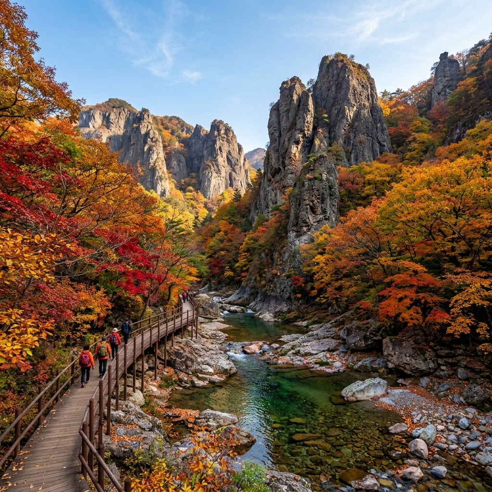
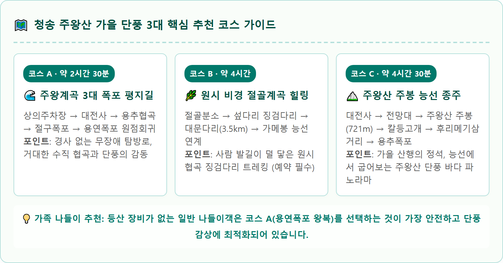
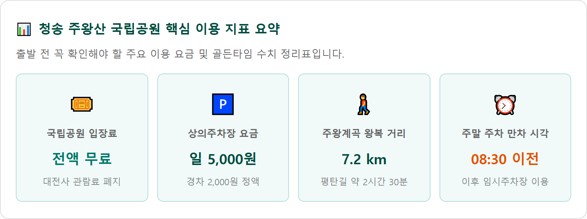

청송 주왕산 단풍 언제 절정인가 — 주왕계곡 3대 폭포 코스와 절골 트레킹·공영주차장 팁
유네스코 세계지질공원 청송 주왕산의 웅장한 기암괴석과 주왕계곡 협곡 단풍은 10월 25일부터 11월 5일 사이에 절정을 이룹니다.
하늘을 찌를 듯 솟아오른 기암(旗岩)을 배경으로 대전사 마당을 지나 용추협곡, 절구폭포, 용연폭포로 이어지는 주왕계곡 코스는 가파른 계단 없이 완만한 평지길로 정비되어 있어 누구나 쉽게 단풍 트레킹을 즐길 수 있습니다. 대전사 문화재관람료 폐지에 따른 전면 무료입장 혜택, 상의공영주차장 주차 요금과 아침 만차 시간, 원시 비경을 간직한 절골계곡 탐방 팁까지 상세히 전해드립니다.

주왕산 용추협곡의 거대한 수직 암벽 사이로 물든 화려한 가을 계곡 단풍 전경 / AI 제작 이미지
01 | 유네스코 세계지질공원, 청송 주왕산의 가을이 특별한 이유
경북 청송군 주왕산면 일원에 자리 잡은 주왕산(해발 721m)은 수천만 년 전 화산 폭발로 분출된 화산재가 굳어 형성된 응회암 지대입니다.
급격한 침식 작용으로 형성된 수직 기암절벽과 깊은 협곡이 사계절 독특한 지형미를 자랑하며, 그 가치를 인정받아 유네스코 세계지질공원으로 지정되었습니다.
가을이 되면 회색빛 거대한 수직 암벽과 깎아지른 바위 틈새마다 붉은 단풍나무와 참나무, 노란 은행나무가 뿌리를 내리고 자라나 한 폭의 진경산수화를 펼쳐 놓습니다.
특히 주왕계곡 탐방로는 기암괴석 사이로 맑은 계곡물이 흐르고 계곡 폭이 좁아지는 용추협곡(제1폭포)에 들어서면 사방이 거대한 암벽과 오색 단풍으로 둘러싸여 다른 세상에 들어온 듯한 신비로운 감동을 선사합니다.
02 | 2026 청송 주왕산 단풍 절정 시기 예측과 개화 현황
주왕산은 태백산맥 남단의 산간 분지 지역에 위치하여 주변 대도시보다 일교차가 크고 기온 하강 속도가 빠릅니다.
2026년 주왕산의 단풍은 10월 중순 산꼭대기 칼등고개와 장군봉 능선부터 물들기 시작하여, 탐방객들이 가장 많이 찾는 계곡 평지부는 10월 말에 화려한 극치를 이룹니다.
🍁 2026 주왕산 국립공원 단풍 관람 캘린더
• 주왕산 주봉 및 장군봉 능선부: 10월 18일 ~ 10월 24일 (첫 단풍 및 고지대 발색)
• 주왕계곡 3대 폭포 (용추·절구·용연폭포): 10월 25일 ~ 11월 4일 (협곡 암벽 단풍의 절정기)
• 대전사 경내 및 상가지구: 10월 28일 ~ 11월 8일 (기암 배경 단풍 낙엽 절정)
• 절골계곡 (생태탐방로): 10월 24일 ~ 11월 2일 (원시 계곡 단풍)
03 | 대전사 문화재관람료 폐지와 국립공원 전면 무료입장
과거 주왕산 탐방로 진입 시 대전사 입구에서 징수하던 문화재관람료(성인 4,500원)는 문화재보호법 개정에 따라 전면 무료화되었습니다.
현재는 대전사 경내 관람을 포함하여 주왕계곡 전 구간을 별도의 매표 없이 무료로 입장할 수 있습니다.
| 구분 |
운영 시간 |
입장 요금 |
비고 |
| 주왕계곡 탐방로 |
04:00 ~ 18:00 (입산 시간 지정제) |
전면 무료 |
연중무휴 개방 (기상 악화 시 통제) |
| 대전사 경내 |
상시 개방 |
전면 무료 |
보물 보광전 및 삼층석탑 보유 |
| 절골계곡 탐방로 |
09:00 ~ 16:00 (사전예약제 운영) |
전면 무료 |
국립공원공단 예약시스템 확인 |
04 | 주왕계곡 3대 폭포 무장애 힐링 코스 (용추·절구·용연)
주왕산 최고의 인기 탐방로는 대전사를 출발하여 주왕계곡을 따라 이어지는 3대 폭포 탐방 코스입니다.
대전사에서 제1폭포인 용추폭포까지의 구간은 유모차나 휠체어도 다닐 수 있도록 턱이 없는 완만한 마사토 흙길과 목재 데크로 조성된 무장애 탐방로입니다.
🥾 주왕계곡 3대 폭포 탐방 순서 및 주요 볼거리
1. 대전사 ~ 자하교 쉼터 (도보 20분): 대전사 마당에서 기암(旗岩)을 배경으로 기념 촬영 후 평탄한 숲길 진입
2. 학소대 & 급수대 주상절리 (도보 15분): 신라 김주원 왕자가 피신했다는 급수대와 학이 둥지를 틀었다는 학소대 수직 바위 절벽 조망
3. 용추협곡 & 용추폭포 (도보 10분): 거대한 바위 절벽이 마주 보는 협곡 사이로 데크길 통과, 깊은 소(沼)를 형성한 용추폭포 관람
4. 절구폭포 (도보 15분): 바위 틈새 좁은 협곡 안쪽에 숨겨진 2단 폭포로, 물줄기가 절구 모양의 바위를 타고 쏟아지는 비경
5. 용연폭포 (도보 15분): 주왕산 폭포 중 가장 웅장한 2단 대형 폭포로, 전망 데크에서 시원한 물줄기와 암벽 단풍 조망
• 총 소요시간: 대전사 ↔ 용연폭포 왕복 약 7.2km, 천천히 걸어 약 2시간 30분 소요

🗺️ 청송 주왕산 가을 단풍 3대 핵심 추천 코스 가이드 / 인포그래픽 카드
05 | 숨은 단풍 비경, 절골계곡 생태탐방로 예약 및 이용 방법
주왕계곡의 인파를 벗어나 자연 그대로의 원시 계곡 단풍을 온전히 즐기고 싶다면 주왕산 남동쪽의 절골계곡을 주목해야 합니다.
절골계곡은 옛날 절이 있던 골짜기라 하여 붙여진 이름으로, 기암절벽 사이로 흐르는 맑은 계곡을 따라 수십 개의 징검다리를 건너며 걷는 이색 트레킹 코스입니다.
자연 생태 보전을 위해 국립공원공단 예약시스템을 통한 사전 탐방예약제(가을 성수기 하루 정원제)로 운영되므로 방문 전 반드시 인터넷 예약을 마쳐야 합니다.
절골분소 주차장은 면수가 30여 대에 불과하므로 주말에는 오전 일찍 도착해야 주차가 가능합니다.

📊 청송 주왕산 국립공원 핵심 이용 지표 요약 / 데이터 요약 카드
06 | 상의공영주차장 주차 요금과 주말 혼잡 회피 전략
주왕산 국립공원의 메인 진입로인 상의지구에는 대형 공영주차장(제1·제2·제3주차장)이 조성되어 있습니다.
단풍철 주말에는 오전 8시 30분을 넘기면 상의주차장이 가득 차며 청송 시내 방면 도로변까지 수 킬로미터의 정체가 발생합니다.
| 주차장 구분 |
위치 및 주요 특징 |
주차 요금 |
추천 전략 |
| 상의 제1·2주차장 |
상의 매표소 및 상가지구 최인접 |
승용차 5,000원 / 경차 2,000원 |
오전 8시 이전 도착 시 우선 주차 |
| 상의 제3주차장 |
진입로 하단부, 도보 10분 소요 |
승용차 5,000원 / 경차 2,000원 |
제1·2주차장 만차 시 순차 진입 |
| 청송소방서 앞 임시주차장 |
청송읍 월막리 외곽 부지 |
무료 |
주말 오전 9시 이후 도착 시 셔틀 환승 |
07 | 청송 가을 별미 — 달기약수 닭백숙과 제철 청송 사과
주왕산 단풍 트레킹으로 피로해진 몸을 보양하기에 청송의 로컬 미식만 한 것이 없습니다.
• 달기약수 닭백숙: 철분과 탄산 성분이 풍부하여 톡 쏘는 맛이 나는 청송 달기약수로 끓여낸 닭백숙은 고기 육질이 연하고 잡내가 전혀 없습니다. 인삼, 대추, 찹쌀, 녹두를 듬뿍 넣어 끓여낸 녹두죽은 속을 편안하게 달래줍니다.
• 자연산 송이버섯 전골: 가을 청송은 전국에서도 손꼽히는 송이버섯 산지입니다. 은은한 솔향이 배어 나오는 송이버섯 소고기 전골은 가을철 한정으로 맛볼 수 있는 최고의 별미입니다.
• 청송 꿀사과 직판장: 10월은 당도가 최고조에 달한 청송 사과(부사, 양광) 수확 철입니다. 국립공원 진입로 곳곳의 과수원 직판장에서 갓 수확한 아삭하고 달콤한 사과를 합리적인 가격에 맛보고 구매할 수 있습니다.
08 | 청송 주왕산 가을 당일치기 추천 하루 일정표
대전사 3대 폭포 트레킹과 주변 명소를 연계한 하루 나들이 일정표입니다.
| 시간대 |
일정 및 이동 동선 |
활동 내용 및 여행 팁 |
| 08:00 ~ 08:30 |
상의주차장 도착 및 주차 |
상의 제1주차장 주차 완료 및 트레킹 채비 |
| 08:30 ~ 09:10 |
대전사 관람 & 기암 촬영 |
대전사 보광전 뒤편 웅장한 기암괴석을 배경으로 아침 인증샷 |
| 09:10 ~ 10:30 |
주왕계곡 3대 폭포 트레킹 |
학소대 → 용추협곡 → 절구폭포 → 용연폭포 단풍 산책 |
| 10:30 ~ 11:30 |
상의지구 하산 |
자하교 쉼터 경유하여 상가거리로 여유롭게 복귀 |
| 11:30 ~ 13:00 |
점심 식사 (달기약수터 이동) |
달기약수터 원탕 이동 후 약수 닭백숙과 녹두죽 식사 |
| 13:00 ~ 14:30 |
주산지 가을 산책 |
영화 촬영지 주산지 방문, 물속에 잠긴 수령 300년 왕버들 감상 |
| 14:30 ~ 16:00 |
청송 사과 과수원 체험 및 귀가 |
청송 사과 직판장 들러 사과즙 시음 및 귀가 드라이브 |
#청송주왕산
#주왕산단풍
#주왕산단풍시기
#용추폭포
#용추협곡
#절골계곡
#주왕산주차장
#대전사
#주산지
#가을단풍트레킹